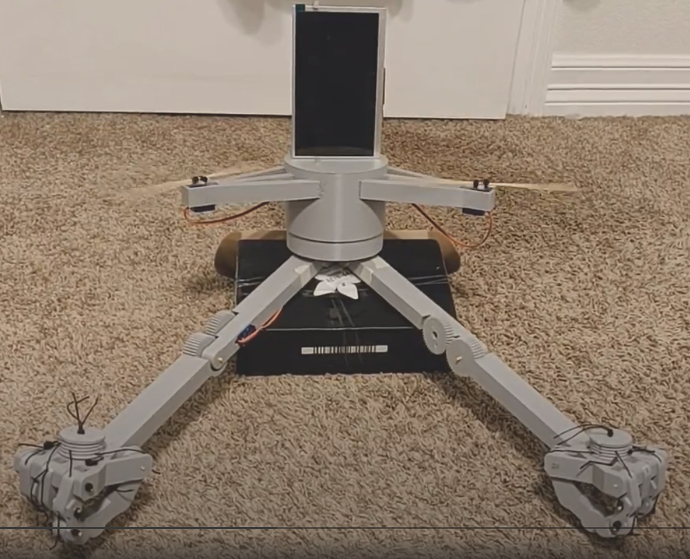
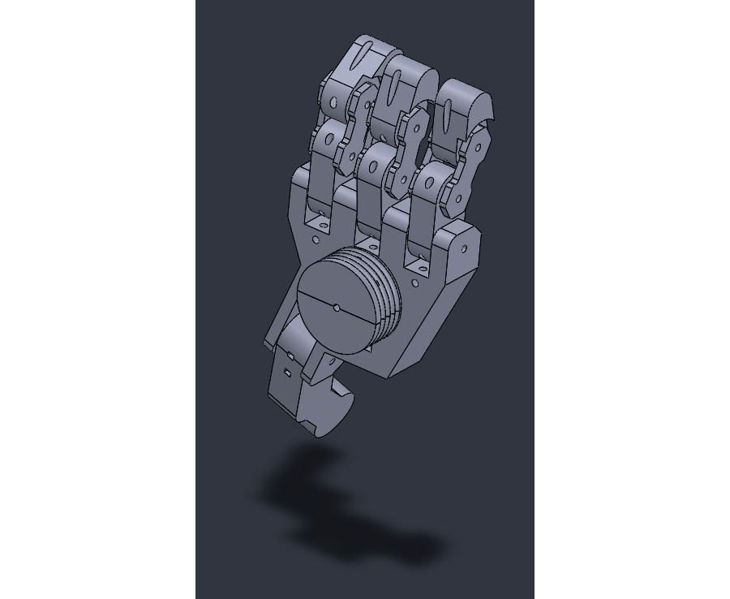

Originally planned around dinosaur animatronics for a UT theater production, this multidisciplinary class pivoted to working with two groups of 4th graders from local schools with the onset of covid. These students presented us with their ideas for robots that would improve the world. While most of these ideas were wildly impractical, our task was to match their vision as closely as possible for a final presentation at the end of the semester. Along the way, we learned a number of techniques, including theater smoke and mirrors, cardboard and other lightweight fabrication, and live video processing. All of these techniques culminated in our final presentations to the students and their families, which by and large were a great success.
My student, Gael, dreamt up a drone robot with hands, to allow for telepresence interaction with others during the pandemic. From his original sketches, seen below, I designed a mostly 3D printed "drone" robot to match the specifications. Powered by both an arduino and my desktop PC from behind a green screen, the final product worked beautifully for the final presentation. Below you will find a few snapshots of the individual systems of the project - the final video interacting with the student cannot be published for privacy. This class was super interesting, with a very different kind of constraints and demands than the standard engineering work. It was a great opportunity to push my skills in a new direction.
Demonstration of the video feed on the robot for telepresence.
Shot of the full 3D printed robot.
CAD model of the cord driven single servo "hands".